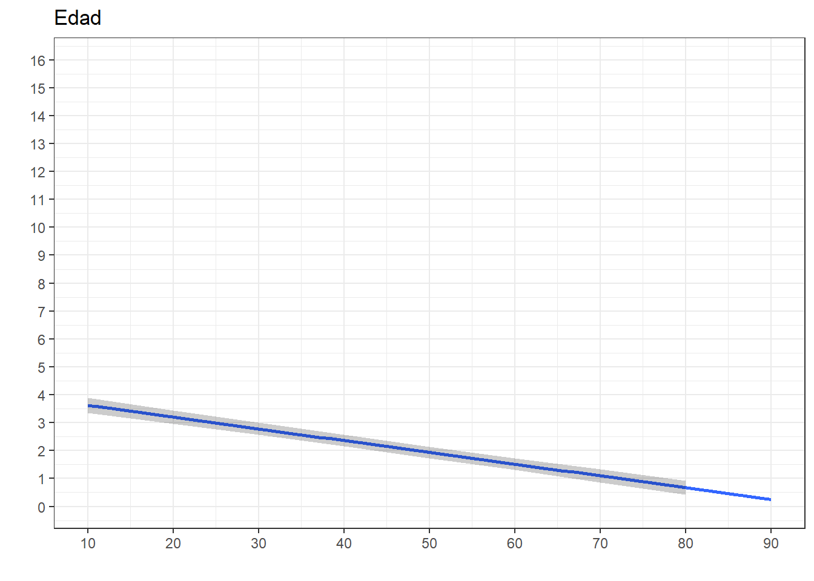

La siguiente práctica tiene el objetivo de repasar en la interpretación de coeficientes de correlación y la construcción de escalas, así como también en la interpretación de coeficientes de regresión lineal y logística. Para ello, utilizaremos la base de datos de la tercera ola del Estudio Longitudinal Social del Chile 2018 con el objetivo de analizar los determinantes de la Participación Ciudadana.
La versión original de este ejercicio proviene del curso de Estadística multivariada versión 2022.
El Estudio Longitudinal Social del Chile ELSOC, único en Chile y América Latina, consiste en encuestar a casi 3.000 chilenos, anualmente, a lo largo de una década. ELSOC ha sido diseñado para evaluar la manera cómo piensan, sienten y se comportan los chilenos en torno a un conjunto de temas referidos al conflicto y la cohesión social en Chile. La población objetivo son hombres y mujeres entre 15 y 75 años de edad con un alcance nacional, donde se obtuvo una muestra final de 3748 casos en el año 2018.
Código
#Cargamos la base de datos desde internetload(url("https://github.com/Kevin-carrasco/metod1-MCS/raw/main/files/data/elsoc2.RData"))
Explorar datos
A partir de la siguiente tabla se obtienen estadísticos descriptivos que luego serán relevantes para realizar las transformaciones y análisis posteriores.
Código
view_df(elsoc,max.len =50)
Data frame: elsoc
ID
Name
Label
Values
Value Labels
1
sexo
Sexo entrevistado
0
1
Hombre
Mujer
2
edad
Edad entrevistado
range: 18-90
3
educ
Nivel educacional
1
2
3
4
5
Primaria incompleta menos
Primaria y secundaria baja
Secundaria alta
Terciaria ciclo corto
Terciaria y Postgrado
4
pospol
Autoubicacion escala izquierda-derecha
1
2
3
4
Derecha
Centro
Izquierda
Indep./Ninguno
5
part01
Frecuencia: Firma carta o peticion apoyando causa
1
2
3
4
5
Nunca
Casi nunca
A veces
Frecuentemente
Muy frecuentemente
6
part02
Frecuencia: Asiste a mbackground-color:#eeeeeeha o manifestacion
pacifica
1
2
3
4
5
Nunca
Casi nunca
A veces
Frecuentemente
Muy frecuentemente
7
part03
Frecuencia: Participa en huelga
1
2
3
4
5
Nunca
Casi nunca
A veces
Frecuentemente
Muy frecuentemente
8
part04
Frecuencia: Usa redes sociales para opinar en
temas publicos
1
2
3
4
5
Nunca
Casi nunca
A veces
Frecuentemente
Muy frecuentemente
Menos de $220.000 mensuales liquidos
De $220.001 a $280.000 mensuales liquidos
De $280.001 a $330.000 mensuales liquidos
De $330.001 a $380.000 mensuales liquidos
De $380.001 a $420.000 mensuales liquidos
De $420.001 a $470.000 mensuales liquidos
De $470.001 a $510.000 mensuales liquidos
De $510.001 a $560.000 mensuales liquidos
De $560.001 a $610.000 mensuales liquidos
De $610.001 a $670.000 mensuales liquidos
De $670.001 a $730.000 mensuales liquidos
De $730.001 a $800.000 mensuales liquidos
De $800.001 a $890.000 mensuales liquidos
De $890.001 a $980.000 mensuales liquidos
De $980.001 a $1.100.000 mensuales liquidos
De $1.100.001 a $1.260.000 mensuales liquidos
De $1.260.001 a $1.490.000 mensuales liquidos
De $1.490.001 a $1.850.000 mensuales liquidos
De $1.850.001 a $2.700.000 mensuales liquidos
Mas de $2.700.000 a mensuales liquidos
elsoc$inghogar_t[elsoc$inghogar_t==1] <-( 220000 ) # [1] "Menos de $220.000 mensuales liquidos" elsoc$inghogar_t[elsoc$inghogar_t==2] <-(220001+280000 )/2# [2] "De $220.001 a $280.000 mensuales liquidos" elsoc$inghogar_t[elsoc$inghogar_t==3] <-(280001+330000 )/2# [3] "De $280.001 a $330.000 mensuales liquidos" elsoc$inghogar_t[elsoc$inghogar_t==4] <-(330001+380000 )/2# [4] "De $330.001 a $380.000 mensuales liquidos" elsoc$inghogar_t[elsoc$inghogar_t==5] <-(380001+420000 )/2# [5] "De $380.001 a $420.000 mensuales liquidos" elsoc$inghogar_t[elsoc$inghogar_t==6] <-(420001+470000 )/2# [6] "De $420.001 a $470.000 mensuales liquidos" elsoc$inghogar_t[elsoc$inghogar_t==7] <-(470001+510000 )/2# [7] "De $470.001 a $510.000 mensuales liquidos" elsoc$inghogar_t[elsoc$inghogar_t==8] <-(510001+560000 )/2# [8] "De $510.001 a $560.000 mensuales liquidos" elsoc$inghogar_t[elsoc$inghogar_t==9] <-(560001+610000 )/2# [9] "De $560.001 a $610.000 mensuales liquidos" elsoc$inghogar_t[elsoc$inghogar_t==10]<-(610001+670000 )/2# [10] "De $610.001 a $670.000 mensuales liquidos" elsoc$inghogar_t[elsoc$inghogar_t==11]<-(670001+730000 )/2# [11] "De $670.001 a $730.000 mensuales liquidos" elsoc$inghogar_t[elsoc$inghogar_t==12]<-(730001+800000 )/2# [12] "De $730.001 a $800.000 mensuales liquidos" elsoc$inghogar_t[elsoc$inghogar_t==13]<-(800001+890000 )/2# [13] "De $800.001 a $890.000 mensuales liquidos" elsoc$inghogar_t[elsoc$inghogar_t==14]<-(890001+980000 )/2# [14] "De $890.001 a $980.000 mensuales liquidos" elsoc$inghogar_t[elsoc$inghogar_t==15]<-(980001+1100000)/2# [15] "De $980.001 a $1.100.000 mensuales liquidos" elsoc$inghogar_t[elsoc$inghogar_t==16]<-(1100001+1260000)/2# [16] "De $1.100.001 a $1.260.000 mensuales liquidos" elsoc$inghogar_t[elsoc$inghogar_t==17]<-(1260001+1490000)/2# [17] "De $1.260.001 a $1.490.000 mensuales liquidos" elsoc$inghogar_t[elsoc$inghogar_t==18]<-(1490001+1850000)/2# [18] "De $1.490.001 a $1.850.000 mensuales liquidos" elsoc$inghogar_t[elsoc$inghogar_t==19]<-(1850001+2700000)/2# [19] "De $1.850.001 a $2.700.000 mensuales liquidos" elsoc$inghogar_t[elsoc$inghogar_t==20]<-(2700000) # [20] "Mas de $2.700.000 a mensuales liquidos"
y luego imputar este valor medio a los casos NA
Código
elsoc$inghogar_i <-ifelse(test = (is.na(elsoc$inghogar)), #¿existen NA en ingresos?yes = elsoc$inghogar_t, #VERDADERO, remplazar con la media del tramono = elsoc$inghogar) #FALSE, mantener la variable original.elsoc$inghogar_i <-set_label(elsoc$inghogar_i,"Ingreso total del hogar (imputada)")
Código
elsoc$ing_pcap <- elsoc$inghogar_i/elsoc$tamhogarelsoc$ing_pcap <-set_label(elsoc$ing_pcap,"Ingreso per cápita del hogar")
Código
elsoc$quintile<- dplyr::ntile(x = elsoc$ing_pcap,n =5) # n de categorias, para quintiles usamos 5 elsoc$quintile <-factor(elsoc$quintile,c(1,2,3,4,5), c("Quintil 1","Quintil 2","Quintil 3","Quintil 4","Quintil 5")) elsoc %>%group_by(quintile) %>%summarise(n=n(),Media=mean(ing_pcap,na.rm = T),Mediana=median(ing_pcap,na.rm = T)) %>% knitr::kable()
#screenreg para que se vea en Rscreenreg(list(fit01,fit02,fit03),custom.coef.names = labs01)
Código
# htmlreg para que se vea en el sitio webknitreg(list(fit01,fit02,fit03),custom.model.names =c("Modelo 1","Modelo 2","Modelo 3"),custom.coef.names = labs01)
Statistical models
Modelo 1
Modelo 2
Modelo 3
Intercepto
1.25***
0.99***
0.99***
(0.05)
(0.08)
(0.09)
Ingreso per/cap
0.00***
(0.00)
Quintil 2
0.19
0.19
(0.12)
(0.12)
Quintil 3
0.51***
0.51***
(0.12)
(0.12)
Quintil 4
0.60***
0.60***
(0.12)
(0.12)
Quintil 5
1.08***
1.08***
(0.12)
(0.12)
Quintil perdido
0.66***
(0.18)
R2
0.01
0.03
0.02
Adj. R2
0.01
0.03
0.02
Num. obs.
3546
3546
3740
***p < 0.001; **p < 0.01; *p < 0.05
El tercer modelo, con el quintil de casos perdidos, es el que entrega más información y además tiene mayor cantidad de casos (3740).
El Modelo 1 indica que las mujeres participan 0.13 unidades menos en comparación con los hombres, sin embargo, esta relación no es estadísticamente significativa (p>0.05).
El Modelo 2 indica que por cada unidad que aumenta la edad, la participación política disminuye en promedio 0.04 unidades, con un 99.9% de significación estadístico y manteniendo el sexo constante. Esta relación es consistente en los otros dos modelos.
El Modelo 3 indica que en medida que aumenta el ingreso, la participación política tiende a ser más alta. En específico, en comparación con el menor quintil de ingreso, al pertenecer a un quintil de ingreso 2 (p<0.05), 3, 4 y 5 (p<0.001), la participación política aumenta, manteniendo el resto de las variables constantes. Este efecto disminuye un poco en el modelo siguiente, pero mantiene un efecto lineal (a mayor quintil, mayor participación).
En el Modelo 4 que incluye la posición política de los/as encuestados, la participación política de las personas de izquierda, centro o independiente/ninguno es menor en comparación con las personas de derecha, con una significación estadística del 99.9%, manteniendo el resto de las variables constantes.
Cálculo de valores predichos
Paquete ggeffects de R: últil para estimar Valores predichos a partir de modelos de regresión
Combinado con ggplot2, se pueden generar gráficos que muestran de modo más intuitivo la relación entre variables
ggeffects::ggpredict(fit07, terms="edad") %>%ggplot(mapping=aes(x = x, y=predicted)) +labs(title="Edad", x ="", y ="")+theme_bw() +geom_smooth()+geom_ribbon(aes(ymin = conf.low, ymax = conf.high), alpha = .2, fill ="black") +scale_x_continuous(breaks =seq(0,100, by =10))+scale_y_continuous(limits =c(0,16), breaks =seq(0,16, by =1))
`geom_smooth()` using method = 'loess' and formula = 'y ~ x'

Ejecutar el código
---title: "09: Regresión lineal y valores predichos"subtitle: "R data analisis"linktitle: "Resumen"date: "2024-05-07"lang: es---# PresentaciónLa siguiente práctica tiene el objetivo de repasar en la interpretación de coeficientes de correlación y la construcción de escalas, así como también en la interpretación de coeficientes de regresión lineal y logística. Para ello, utilizaremos la base de datos de la tercera ola del [*Estudio Longitudinal Social del Chile 2018*](https://doi.org/10.7910/DVN/H8OVMF) con el objetivo de analizar los determinantes de la **Participación Ciudadana.**La versión original de este ejercicio proviene del curso de [Estadística multivariada](https://multivariada.netlify.app/assignment/10-code/) versión 2022.# Librerías```{r}pacman::p_load(dplyr, car, summarytools, sjPlot, texreg, corrplot, ggplot2, sjlabelled, fastDummies, ggeffects)```# DatosEl Estudio Longitudinal Social del Chile [ELSOC](https://coes.cl/encuesta-panel/), único en Chile y América Latina, consiste en encuestar a casi 3.000 chilenos, anualmente, a lo largo de una década. ELSOC ha sido diseñado para evaluar la manera cómo piensan, sienten y se comportan los chilenos en torno a un conjunto de temas referidos al conflicto y la cohesión social en Chile. La población objetivo son hombres y mujeres entre 15 y 75 años de edad con un alcance nacional, donde se obtuvo una muestra final de **3748** casos en el año 2018.```{r}#Cargamos la base de datos desde internetload(url("https://github.com/Kevin-carrasco/metod1-MCS/raw/main/files/data/elsoc2.RData"))```## Explorar datosA partir de la siguiente tabla se obtienen estadísticos descriptivos que luego serán relevantes para realizar las transformaciones y análisis posteriores.```{r}view_df(elsoc,max.len =50)```## Variable dependiente: participación política```{r, fig.width=10}plot_stackfrq(elsoc[,c("part01","part02","part03","part04")]) + theme(legend.position="bottom")``````{r}corrplot.mixed(cor(select(elsoc,part01,part02,part03,part04),use ="complete.obs"))``````{r}elsoc$part01 <- car::recode(elsoc$part01, "1=0; 2=1; 3=2; 4=3; 5=4")elsoc$part02 <- car::recode(elsoc$part02, "1=0; 2=1; 3=2; 4=3; 5=4")elsoc$part03 <- car::recode(elsoc$part03, "1=0; 2=1; 3=2; 4=3; 5=4")elsoc$part04 <- car::recode(elsoc$part04, "1=0; 2=1; 3=2; 4=3; 5=4")elsoc <- elsoc %>%mutate(partpol=rowSums(select(., part01,part02,part03,part04)))summary(elsoc$partpol)```## Variable independiente: ingresosingresos hogar variable continua```{r}summary(elsoc$inghogar)```ingreso hogar en tramos```{r}sjmisc::frq(elsoc$inghogar_t,out ="txt",show.na = T) %>% knitr::kable()```podemos obtener la mediana de cada tramo```{r}elsoc$inghogar_t[elsoc$inghogar_t==1] <-( 220000 ) # [1] "Menos de $220.000 mensuales liquidos" elsoc$inghogar_t[elsoc$inghogar_t==2] <-(220001+280000 )/2# [2] "De $220.001 a $280.000 mensuales liquidos" elsoc$inghogar_t[elsoc$inghogar_t==3] <-(280001+330000 )/2# [3] "De $280.001 a $330.000 mensuales liquidos" elsoc$inghogar_t[elsoc$inghogar_t==4] <-(330001+380000 )/2# [4] "De $330.001 a $380.000 mensuales liquidos" elsoc$inghogar_t[elsoc$inghogar_t==5] <-(380001+420000 )/2# [5] "De $380.001 a $420.000 mensuales liquidos" elsoc$inghogar_t[elsoc$inghogar_t==6] <-(420001+470000 )/2# [6] "De $420.001 a $470.000 mensuales liquidos" elsoc$inghogar_t[elsoc$inghogar_t==7] <-(470001+510000 )/2# [7] "De $470.001 a $510.000 mensuales liquidos" elsoc$inghogar_t[elsoc$inghogar_t==8] <-(510001+560000 )/2# [8] "De $510.001 a $560.000 mensuales liquidos" elsoc$inghogar_t[elsoc$inghogar_t==9] <-(560001+610000 )/2# [9] "De $560.001 a $610.000 mensuales liquidos" elsoc$inghogar_t[elsoc$inghogar_t==10]<-(610001+670000 )/2# [10] "De $610.001 a $670.000 mensuales liquidos" elsoc$inghogar_t[elsoc$inghogar_t==11]<-(670001+730000 )/2# [11] "De $670.001 a $730.000 mensuales liquidos" elsoc$inghogar_t[elsoc$inghogar_t==12]<-(730001+800000 )/2# [12] "De $730.001 a $800.000 mensuales liquidos" elsoc$inghogar_t[elsoc$inghogar_t==13]<-(800001+890000 )/2# [13] "De $800.001 a $890.000 mensuales liquidos" elsoc$inghogar_t[elsoc$inghogar_t==14]<-(890001+980000 )/2# [14] "De $890.001 a $980.000 mensuales liquidos" elsoc$inghogar_t[elsoc$inghogar_t==15]<-(980001+1100000)/2# [15] "De $980.001 a $1.100.000 mensuales liquidos" elsoc$inghogar_t[elsoc$inghogar_t==16]<-(1100001+1260000)/2# [16] "De $1.100.001 a $1.260.000 mensuales liquidos" elsoc$inghogar_t[elsoc$inghogar_t==17]<-(1260001+1490000)/2# [17] "De $1.260.001 a $1.490.000 mensuales liquidos" elsoc$inghogar_t[elsoc$inghogar_t==18]<-(1490001+1850000)/2# [18] "De $1.490.001 a $1.850.000 mensuales liquidos" elsoc$inghogar_t[elsoc$inghogar_t==19]<-(1850001+2700000)/2# [19] "De $1.850.001 a $2.700.000 mensuales liquidos" elsoc$inghogar_t[elsoc$inghogar_t==20]<-(2700000) # [20] "Mas de $2.700.000 a mensuales liquidos"```y luego *imputar* este valor medio a los casos NA```{r}elsoc$inghogar_i <-ifelse(test = (is.na(elsoc$inghogar)), #¿existen NA en ingresos?yes = elsoc$inghogar_t, #VERDADERO, remplazar con la media del tramono = elsoc$inghogar) #FALSE, mantener la variable original.elsoc$inghogar_i <-set_label(elsoc$inghogar_i,"Ingreso total del hogar (imputada)")``````{r}elsoc$ing_pcap <- elsoc$inghogar_i/elsoc$tamhogarelsoc$ing_pcap <-set_label(elsoc$ing_pcap,"Ingreso per cápita del hogar")``````{r}elsoc$quintile<- dplyr::ntile(x = elsoc$ing_pcap,n =5) # n de categorias, para quintiles usamos 5 elsoc$quintile <-factor(elsoc$quintile,c(1,2,3,4,5), c("Quintil 1","Quintil 2","Quintil 3","Quintil 4","Quintil 5")) elsoc %>%group_by(quintile) %>%summarise(n=n(),Media=mean(ing_pcap,na.rm = T),Mediana=median(ing_pcap,na.rm = T)) %>% knitr::kable()``````{r}elsoc$quintilemiss <-factor(elsoc$quintile,ordered = T)elsoc$quintilemiss <-ifelse(test=is.na(elsoc$quintilemiss),yes =6,no = elsoc$quintilemiss)elsoc$quintilemiss <-factor(elsoc$quintilemiss ,levels =c(1,2,3,4,5,6),labels =c("Quintil 1","Quintil 2","Quintil 3","Quintil 4","Quintil 5","Missing")) elsoc %>%group_by(quintilemiss) %>%summarise(n=n())```# Regresión linealveamos primero las diferencias de usar cada tipo de variable de ingreso```{r}fit01<-lm(partpol~ing_pcap,data=elsoc)fit02<-lm(partpol~quintile,data=elsoc)fit03<-lm(partpol~quintilemiss,data=elsoc)``````{r, results='asis'}labs01 <- c("Intercepto","Ingreso per/cap", "Quintil 2","Quintil 3","Quintil 4","Quintil 5", "Quintil 2","Quintil 3","Quintil 4","Quintil 5","Quintil perdido")``````{r, results='asis', eval=FALSE}#screenreg para que se vea en Rscreenreg(list(fit01,fit02,fit03),custom.coef.names = labs01)``````{r, results='asis'}# htmlreg para que se vea en el sitio webknitreg(list(fit01,fit02,fit03), custom.model.names = c("Modelo 1","Modelo 2","Modelo 3"), custom.coef.names = labs01)```El tercer modelo, con el quintil de casos perdidos, es el que entrega más información y además tiene mayor cantidad de casos (3740).```{r}fit04<-lm(partpol~sexo,data=elsoc)fit05<-lm(partpol~sexo+edad,data=elsoc)fit06<-lm(partpol~sexo+edad+quintilemiss,data=elsoc)fit07<-lm(partpol~sexo+edad+quintilemiss+pospol,data=elsoc)labs02 <-c("Intercepto","Sexo (mujer=1)","Edad","Quintil 2","Quintil 3","Quintil 4","Quintil 5","Quintil perdido","Izquierda (ref. derecha)","Centro","Idep./Ninguno")``````{r, results='asis', eval=FALSE}screenreg(list(fit04,fit05,fit06, fit07),custom.coef.names = labs02)``````{r, results='asis'}knitreg(list(fit04,fit05,fit06, fit07), custom.model.names = c("Modelo 1","Modelo 2","Modelo 3", "Modelo 4"), custom.coef.names = c("Intercepto", "Sexo (mujer=1)", "Edad", "Quintil 2", "Quintil 3", "Quintil 4", "Quintil 5", "Quintil perdido", "Izquierda (ref. derecha)", "Centro", "Indep./Ninguno"))```El Modelo 1 indica que las mujeres participan 0.13 unidades menos en comparación con los hombres, sin embargo, esta relación no es estadísticamente significativa (p>0.05).El Modelo 2 indica que por cada unidad que aumenta la edad, la participación política disminuye en promedio 0.04 unidades, con un 99.9% de significación estadístico y manteniendo el sexo constante. Esta relación es consistente en los otros dos modelos.El Modelo 3 indica que en medida que aumenta el ingreso, la participación política tiende a ser más alta. En específico, en comparación con el menor quintil de ingreso, al pertenecer a un quintil de ingreso 2 (p<0.05), 3, 4 y 5 (p<0.001), la participación política aumenta, manteniendo el resto de las variables constantes. Este efecto disminuye un poco en el modelo siguiente, pero mantiene un efecto lineal (a mayor quintil, mayor participación).En el Modelo 4 que incluye la posición política de los/as encuestados, la participación política de las personas de izquierda, centro o independiente/ninguno es menor en comparación con las personas de derecha, con una significación estadística del 99.9%, manteniendo el resto de las variables constantes.## Cálculo de valores predichos* Paquete ggeffects de R: últil para estimar Valores predichos a partir de modelos de regresión* Combinado con ggplot2, se pueden generar gráficos que muestran de modo más intuitivo la relación entre variables```{r, results='asis'}knitreg(list(fit04), custom.model.names = c("Modelo 1"), custom.coef.names = c("Intercepto", "Sexo (mujer=1)"))``````{r}ggeffects::ggpredict(fit04, terms =c("sexo")) %>%ggplot(aes(x=x, y=predicted)) +geom_bar(stat="identity", color="grey", fill="grey")+geom_errorbar(aes(ymin = conf.low, ymax = conf.high), width=.1) +labs(title="Sexo", x ="", y ="") +theme_bw() +scale_x_continuous(name ="",breaks =c(0,1),labels =c("Hombre", "Mujer"))+scale_y_continuous(limits =c(0,16), breaks =seq(0,16, by =1))``````{r, results='asis'}knitreg(list(fit07), custom.model.names = c("Modelo 4"), custom.coef.names = c("Intercepto", "Sexo (mujer=1)", "Edad", "Quintil 2", "Quintil 3", "Quintil 4", "Quintil 5", "Quintil perdido", "Izquierda (ref. derecha)", "Centro", "Indep./Ninguno"))``````{r}ggeffects::ggpredict(fit07, terms =c("quintilemiss")) %>%ggplot(aes(x=x, y=predicted)) +geom_bar(stat="identity", color="grey", fill="grey")+geom_errorbar(aes(ymin = conf.low, ymax = conf.high), width=.1) +labs(title="Quintil ingresos", x ="", y ="") +theme_bw() +scale_x_discrete(name ="",labels =c("Quintil 1", "Quintil 2", "Quintil 3", "Quintil 4", "Quintil 5", "Quintil perdido")) +scale_y_continuous(limits =c(0,16), breaks =seq(0,16, by =1))``````{r}ggeffects::ggpredict(fit07, terms =c("pospol")) %>%ggplot(aes(x=x, y=predicted)) +geom_bar(stat="identity", color="grey", fill="grey")+geom_errorbar(aes(ymin = conf.low, ymax = conf.high), width=.1) +labs(title="Posición política", x ="", y ="") +theme_bw() +scale_x_discrete(name ="",labels =c("Derecha", "Centro", "Izquierda", "Independiente/ninguno")) +scale_y_continuous(limits =c(0,16), breaks =seq(0,16, by =1))``````{r}ggeffects::ggpredict(fit07, terms="edad") %>%ggplot(mapping=aes(x = x, y=predicted)) +labs(title="Edad", x ="", y ="")+theme_bw() +geom_smooth()+geom_ribbon(aes(ymin = conf.low, ymax = conf.high), alpha = .2, fill ="black") +scale_x_continuous(breaks =seq(0,100, by =10))+scale_y_continuous(limits =c(0,16), breaks =seq(0,16, by =1))```